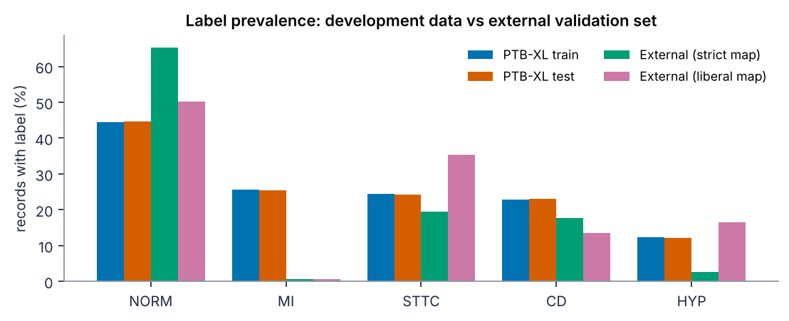
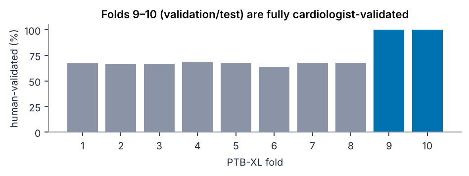
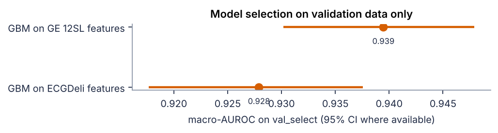

Author: Rittik Patra. Research software — not a medical device and not for
diagnostic use. All numbers in this guide are read from the saved, version-controlled reports in
ecg-trust/reports/; none are typed by hand.
Most ECG deep-learning portfolios stop at one number: the AUROC on a held-out split. A clinical team deciding whether to deploy a model needs more: are the probabilities honest, can the model say "I don't know", does it hold up on noisy recordings, on other hospitals and on patient subgroups, and is it better than the interpretation software already built into the ECG cart? This project answers those questions for a five-class 12-lead ECG classifier trained on PTB-XL.
| Question | How it is answered | Result |
|---|---|---|
| Does it rank cases well? | Patient-bootstrap AUROC, internal test | pending |
| Are probabilities honest? | ECE before → after temperature scaling | pending |
| Can it say 'I don't know'? | Label-conditional conformal refer rate, α = 0.10 | pending |
| Does it transfer? | External database, strict label map | pending |
| Is it robust to noise? | Synthetic noise at exact SNR; refer rate vs SNR | see §6.4 |
| Better than the cart software? | Sensitivity at GE 12SL's specificity | see §6.7 |
Objective. Build, evaluate and serve a classifier for the five PTB-XL diagnostic superclasses — normal ECG (NORM), myocardial infarction (MI), ST/T change (STTC), conduction disturbance (CD) and hypertrophy (HYP) — from 10-second, 12-lead ECGs, and produce evidence for when its output can be trusted.
Why trust is the product. A diagnostic-support model is only useful if a clinician can act on its output. Three properties matter as much as ranking performance. Calibration: a predicted 70 % should be right about 70 % of the time, otherwise thresholds and risk communication break. Abstention: on ambiguous or poor-quality recordings the model should refer to a cardiologist instead of guessing. Transportability: performance on a different population, device and labelling process is usually lower; the size of the drop must be measured, not assumed.
Scope. Multi-label classification at 100 Hz. The 500 Hz recordings, the 71 individual statements, new architectures and clinical thresholds are out of scope. Compute is a 4-core CPU container, so models are deliberately compact.
The project followed a written design specification and a 24-task, test-driven implementation plan with four milestones. Each milestone ended at a review gate with the author.
| Milestone | Deliverable | Gate |
|---|---|---|
| M1 · Data | Downloader, labels, splits, signal caches, external loader, feature baseline, data audit | Audit and label-map review |
| M2 · Models | 1-D ResNet, 3-seed ensemble, calibration, conformal, robustness, 12SL comparator — validation data only | Freeze: models, thresholds and maps hashed |
| M3 · Final evaluation | Single logged run on the internal test fold and on the external set | Results review |
| M4 · Product | API, demo, Docker, CI, model card, README, this guide | Portfolio-ready |
| Decision | Why |
|---|---|
| PhysioNet AWS open-data mirror, every file SHA-256-verified, resumable downloads | physionet.org was not reachable; the proxy cut long transfers |
| Patient-level split of fold 9 into model-selection and calibration halves | conformal guarantees need calibration data unused for training or tuning |
| External label map completed to all 94 SNOMED codes; strict PTB-XL-faithful primary map, liberal map as sensitivity analysis | the dataset's condition list missed 43 codes, incl. complete RBBB and LBBB; PTB-XL treats isolated ST/T findings as form statements |
| NORM proxy = sinus-family rhythms only; unlabelled external records excluded | mirrors PTB-XL, where sinus bradycardia can be a normal ECG |
| 1-D ResNet width 64 (1.49 M parameters), 3 seeds | author's choice after a CPU timing benchmark |
| Synthetic, SNR-exact noise instead of NSTDB records | NSTDB was not on the reachable mirror |
| GE 12SL map built from statement names cross-checked with PTB-XL+ SNOMED concepts; ambiguous statements unmapped | keeps the commercial comparison conservative |
| Freeze manifest + single-use test log | prevents tuning on the test sets |
| Dataset | Role | Size |
|---|---|---|
| PTB-XL 1.0.3 (Wagner et al., 2020) | Training, validation, internal test | 21,799 ECGs, 18,869 patients, 10 s, 12 leads |
| PTB-XL+ 1.0.1 (Strodthoff et al., 2023) | Feature baseline; GE 12SL machine statements | ECG measurements from GE 12SL, Glasgow Uni-G and ECGDeli |
| Large-scale 12-lead arrhythmia database 1.0.0 (Zheng et al., 2022) | External validation | 45,152 ECGs from Chapman University / Shaoxing / Ningbo hospitals; 28,646 evaluated |
All files were downloaded from the PhysioNet open-data mirror and verified against the published SHA-256 checksums (134,363 files, 6.2 GB, zero failures). Labels follow the published benchmark convention: a superclass is positive if any diagnostic SCP statement maps to it. 411 PTB-XL records have no diagnostic superclass and are excluded.


| train | 17,084 records |
| val_select | 1,072 records |
| val_calib | 1,074 records |
| test | 2,158 records |
Folds 1–8 train; fold 9 split by patient into model selection and calibration halves; fold 10 is the locked test set. No patient appears in two splits (checked by a unit test and at run time).
The external database codes diagnoses in SNOMED CT; 43 of the 94 codes present in its records were missing from its own condition list and were identified from the PhysioNet/CinC Challenge 2021 mapping. The primary map is strict and PTB-XL-faithful: isolated ST/T-wave findings and voltage-only LVH criteria are form statements in PTB-XL and are therefore not mapped. A liberal map that includes them is reported as a sensitivity analysis. NORM is a proxy (sinus-family rhythm codes only), and records without any superclass are excluded, exactly as in PTB-XL.
Feature baseline. One histogram gradient-boosting classifier per class on 757 GE 12SL measurements (intervals, amplitudes, axes), with ECGDeli features as an open-source alternative. Deep model. A 1-D ResNet (width 64, stages [2, 2, 2, 2], kernel 7) trained with AdamW, one-cycle learning rate and early stopping on validation macro-AUROC; three seeds are averaged as a deep ensemble (Lakshminarayanan et al., 2017).
For each class a single temperature T rescales every member's logit before averaging: p = meanm σ(zm / T), with T chosen to minimise the negative log-likelihood on the calibration split (Guo et al., 2017). Calibration is measured with the expected calibration error (15 equal-mass bins), Brier score and reliability diagrams.
For each class, non-conformity scores are 1 − p for positive and p for negative calibration ECGs, and each label value gets its own finite-sample quantile (label-conditional, "Mondrian" split conformal; Vovk et al., 2005; Angelopoulos & Bates, 2021):
A new ECG's set contains "present" if 1 − p ≤ q̂1 and "absent" if p ≤ q̂0. A single-element set is a decision; otherwise the ECG is referred. Under exchangeability the true label is covered with probability ≥ 1 − α separately for positives and negatives.
Synthetic noise mimicking the MIT-BIH Noise Stress Test types (baseline wander below 0.5 Hz, EMG-like 20–45 Hz, electrode-motion steps and bursts) is added at exact per-lead SNRs from 24 to −6 dB, plus lead dropout. Subgroups (sex, age band, device, PTB-XL noise flags, pacemaker) are descriptive, with patient-bootstrap CIs; groups with fewer than 30 positives or negatives are marked insufficient. The GE 12SL comparison uses 12SL's own operating point: the model's sensitivity is read at 12SL's specificity on the same ECGs, using a published statement-to-superclass map.

pip install torch --index-url https://download.pytorch.org/whl/cpu pip install -e ".[serve,dev]" ecgtrust download --dataset ptbxl && ecgtrust download --dataset ptbxl_plus && ecgtrust download --dataset external ecgtrust audit ecgtrust train --model baseline --features 12sl ecgtrust train --model resnet --seeds 0 1 2 ecgtrust evaluate --split val_select ecgtrust freeze # hashes checkpoints, config and label maps ecgtrust evaluate --split test # single use, logged ecgtrust evaluate --split external # single use, logged ecgtrust guide # rebuilds this PDF from reports/
Freeze manifest: not frozen y. Seeds 0, 1, 2. Python 3.13.18, PyTorch 2.15.0.
Every unit test runs in CI on synthetic fixtures without network access.